Next: First order mass fraction
Up: Spherical enclosures
Previous: Conduction-diffusion
Contents
The solution for  and 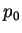 (creeping flow)
is obtained by the method of §B.4.
and 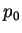 (creeping flow)
is obtained by the method of §B.4.
Here the body force is
| 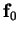 |
 |
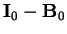 |
(8.28) |
| |
|
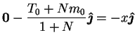 |
(8.29) |
| |
|
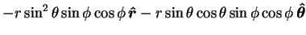 |
|
| |
|
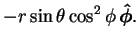 |
(8.30) |
The scalar defining its scaloidal part satisfies
| 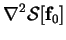 |
|
 |
(8.31) |
| 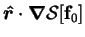 |
|
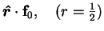 |
|
| |
|
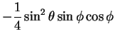 |
|
| |
|
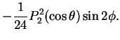 |
(8.32) |
This is
so that
| 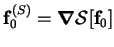 |
|
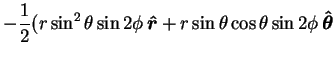 |
|
| |
|
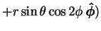 |
(8.34) |
and
 |
|
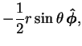 |
(8.35) |
which is obviously solenoidal, as expected.
Clearly
since
The problem for the scalar defining the toroidal part of the body force is:
| 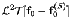 |
|
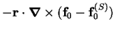 |
(8.38) |
| |
|
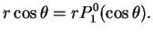 |
(8.39) |
The solution is
To illustrate the decomposition of the vector field here, the force-lines
of ,
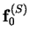 and
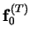 in
the plane  are plotted in figure 8.3.
are plotted in figure 8.3.
Figure 8.3:
Decomposition of the vector field into scaloidal,
, and toroidal,
, parts. The fields
are represented by their force-lines in the plane ,
the contours of 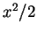, 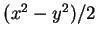 and 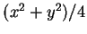.
| 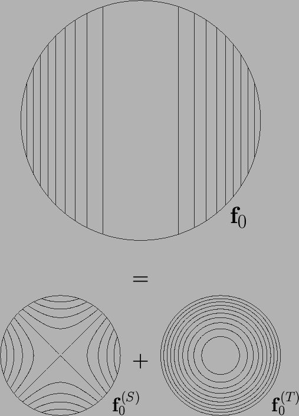 |
Since, in this case, all
three vector fields are plane and solenoidal, the force-lines can be
represented as the contours of scalar functions. The functions are
, 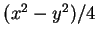 and , respectively.
The problem for
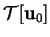 is:
| 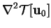 |
|
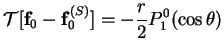 |
(8.41) |
|
|
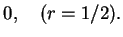 |
(8.42) |
The solution is:
The other scalars,
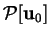 and  , vanish.
, vanish.
Thus,
|
|
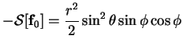 |
(8.44) |
| 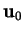 |
|
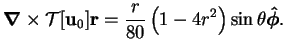 |
(8.45) |
The pressure is plotted in the plane of spanwise symmetry, ,
in figure 8.4.
Figure 8.4:
Zeroth order pressure, , (8.46) in the plane .
The maxima are in the upper-right and lower-left quadrants.
Contour levels at 0.01, 0.1(0.1)0.4, 0.6(0.1)0.9, 0.99 of range.
 |
Since the velocity is purely toroidal, the pressure is due solely to the
scaloidal part of the body force. The force-lines of
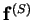
and the isobars, displayed in figures 8.3 and 8.4, are
obviously related: they are mutually orthogonal.
The pressure is very simply expressed in terms of Cartesian coordinates:
The fact that it is independent of  suggests--consider the spanwise
component of the equation of motion (2.54)--that 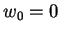. This
is the case:
suggests--consider the spanwise
component of the equation of motion (2.54)--that 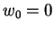. This
is the case:
Notice that in the horizontal plane through the centre ( )
the velocity is purely vertical and identical to the fully developed flow
in a cavity of circular horizontal section (7.65)
except for a factor of
)
the velocity is purely vertical and identical to the fully developed flow
in a cavity of circular horizontal section (7.65)
except for a factor of  .
Since is independent of
.
Since is independent of  , the contours of
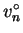 for
, the contours of
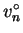 for
 in figure 7.6 can also be interpreted as contours
of the creeping speed in any plane passing through the -axis of the sphere.
in figure 7.6 can also be interpreted as contours
of the creeping speed in any plane passing through the -axis of the sphere.
Next: First order mass fraction
Up: Spherical enclosures
Previous: Conduction-diffusion
Contents
Geordie McBain
2001-01-27